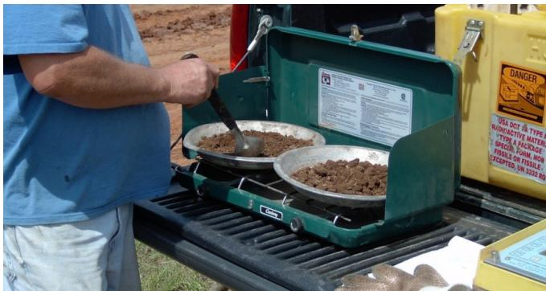

Cement Stabilization Process
The cement stabilization process is a field treatment used to convert an unbound, weak or moisture‑sensitive subgrade into a fully bound, compacted base that provides a stable, load‑bearing platform resistant to consolidation, deflection and freeze‑thaw damage [1][2]. It involves dry‑spreading Portland cement (typically 3–8 % by weight) onto a pulverized aggregate layer, blending the powder with the existing material either in‑place or off‑site, then compacting the mixture to at least 95 % of its laboratory‑determined maximum dry density while maintaining optimum moisture and curing it continuously moist for several days [3][6]. By uniformly binding fine particles—including recycled‑concrete paste—and reducing plasticity and permeability, the treatment creates an all‑weather working platform that mitigates dust, leachate, and drainage problems without contributing significant structural capacity to the pavement [4][7].
CP Tech Center Guides reports covering “Cement Stabilization Process” also include the following subtopics: Cement-Stabilized FDR Stiffness Assessment and FDR Base Compaction Control.
The Cement-Stabilized FDR Stiffness Assessment quantifies the uniformity and deformation behavior of the subgrade intended to support a cement-stabilized full-depth reclamation base by measuring in-situ penetration rates with a dynamic cone penetrometer after curing. [2][5] The evaluation provides rapid estimates of bearing capacity, resilient modulus, or k values that serve as acceptance criteria for early traffic opening and subsequent pavement design. [2][8] FDR Base Compaction Control applies the stabilization technique to distressed pavements by pulverizing existing asphalt and granular base, blending them with Portland cement and water, and compacting the mixture to form a homogenous cement-stabilized base. [2][3]
Sources (12)
Sub-concepts (2)
Purpose and applicability
The cement stabilization process is employed to remedy the absence of a dependable, load‑bearing foundation in pavement construction. By converting an unbound, weak, moisture‑sensitive or overly saturated subgrade into a fully bound, compacted mixture, it creates a stable, firm platform that resists consolidation, deflection and freeze‑thaw damage under traffic loads. The method also resolves practical field issues: applying dry cement after the initial pulverizing pass ensures uniform distribution while minimizing fugitive dust, and when recycled concrete aggregate is present, stabilizing the mix binds exposed paste, preventing the formation of crushed‑concrete dust and calcium carbonate leachate that would otherwise clog drainage pipes and filter fabrics. [1][2][3][4][6][7]
The following figure illustrates the application of cement slurry to the pulverized mix.
 Application of cement slurry to pulverized mix [2]
Application of cement slurry to pulverized mix [2]
The image shows a heavy-duty truck equipped with a rear-mounted manifold system featuring multiple vertical nozzles. These nozzles are actively dispensing a grey liquid slurry onto the ground surface, which appears to be a pulverized aggregate layer.
[1] — Ch. 8 (pp. 225–226); [2] — Ch. 6 (p. 81); [3] — Construction (pp. 58–68), Design (pp. 58–67), Materials (pp. 57–58), Solution (p. 62), Typical Applications (p. 56); [4] — Ch. 4 (pp. 43–44); [6] — Ch. 1 (p. 13), Ch. 5 (p. 44), Ch. 6 (p. 46); [7] — 2. Factors Influencing Long-Li… (pp. 19–20)
When the existing subgrade or base material does not provide a stable working platform—such as highly saturated soils, fine recycled‑aggregate that would generate dust and leachate, or soils that fail to meet required Atterberg limits and CBR values—the guides recommend applying cement stabilization. The process is considered appropriate when the mix can be compacted to at least 95 % of maximum dry density, thereby achieving the needed compressive strength for a durable foundation (“For both silty/clayey and sandy/gravelly subgrades, the CSS material should be uniformly compacted to a minimum of 95 percent of maximum dry density”). It also serves to create an all‑weather platform and reduce plasticity (“Cement‑modified soils are typically not designed to meet a compressive strength requirement, but rather designed to meet reduced plasticity requirements and increased CBR values”; “A cement‑treated or lean concrete base provides a strong and uniform support for the pavement and joints, provides an all‑weather working platform, and contributes to smoother pavements by giving firm support to the forms or paver during construction”). For recycled‑concrete aggregate bases that will be exposed to water, cement (or asphalt) effectively eliminates dust and leachate that could clog drainage (“Cement stabilization of an RCA base is appropriate when the layer will be exposed to water and you need to virtually eliminate dust and leachate that can clog drainage systems; applying cement (or asphalt) to the base effectively prevents those problems”). A typical six‑inch thickness has been shown to supply a satisfactory construction platform (“A common thickness of 6 in. (150 mm) has been shown to provide an adequate working platform for construction of base or subbase layers.”)
Conversely, cement stabilization should be avoided when the pavement requires significant structural load‑bearing capacity that the cement‑modified layer cannot provide (“The CMS layer, however, does not contribute appreciably to the structural capacity of the pavement”). In such cases a conventional granular base or an alternative stabilizing treatment is preferred. The method is also unsuitable for soils classified as A‑6 or A‑7, and for frost‑sensitive A‑4/A‑5 materials that will carry heavy truck traffic (“Use of A‑6 and A‑7 soils is not recommended”). For light‑traffic pavements—residential streets, secondary roads, parking lots, or light‑duty airports—a cement‑treated base may be unnecessary; proper subgrade preparation or an unstabilized granular base can achieve the desired performance (“For light traffic pavements, such as residential streets, secondary roads, parking lots, and light‑duty airports, the use of a base layer may not be required, and the desired results can be obtained with proper subgrade preparation”). When compaction to the specified density proves prohibitively difficult, the engineer may accept a naturally firm subgrade instead of proceeding with cement stabilization (“If achieving a specified density is prohibitably difficult, a stable, firm, and unyielding subgrade condition may also be accepted by the project engineer”). Finally, when dust generation or material volume makes alternatives such as fly ash impractical, cement stabilization is favored over those methods (“Fly ash was not chosen as a solution due to potential problems with dust in the residential areas of the project, as well as the high volume of fly ash required to remedy the subgrade”). [3][4][6][7]
The following figure illustrates how these stabilization methods affect load distribution compared to unstabilized bases.
 Load Distribution of Unstabilized and Stabilized Bases [7]
Load Distribution of Unstabilized and Stabilized Bases [7]
The figure compares the load distribution characteristics of an unstabilized granular base versus a cement-treated base under a vertical load P. In the unstabilized configuration, stress vectors penetrate deeply into the subgrade, whereas in the stabilized configuration, the red arrows are shorter and spread laterally, indicating that the cement-treated layer distributes the load over a wider area. This visualizes how the treatment creates a stable platform by mitigating deflection and consolidation under traffic loads.
[3] — Design (p. 67); [4] — Ch. 4 (pp. 43–44); [6] — Ch. 5 (p. 44), Ch. 6 (p. 46); [7] — 2. Factors Influencing Long-Li… (pp. 19–32)
Required inputs
The guides specify that "Granular materials in AASHTO Soil Classification Groups A‑1, A‑2‑4, A‑2‑5, and A‑3 are used for cement‑treated bases." They also require that the material "Contain no more than 35 percent passing the 75‑μm (#200) sieve" and "Have a PI of 10 or less." The mix is described as "Cement-treated base is a mixture of aggregate material, portland cement, and water." with "Any portland cement type can be used, but Types I and II are the most common." Cement content "usually ranges from 3 to 8 percent for most applications" and "A cement content of four percent was recommended by the contractor based on previous experience." Dry cement is placed according to "dry cement powder should be spread after the initial pulverizing pass and prior to the final mixing pass" using a "mechanical bulk spreader" (or "dry cement is spread using a bulk spreader"); "Mechanical style spreaders are desired in lieu of pneumatic style spreaders for dry cement placement." Dust control is emphasized: "When dry cement is added to the grade, dust control should be a priority to avoid fugitive dust, especially on windy days." Mixing may be performed plant‑side or in‑place: "Stabilized bases are predominantly plant mixed." and "For plant‑mixed bases, the material can be mixed either in a pugmill, a central‑mixed concrete plant, or an asphalt plant." In‑place mixing is described as "The cement was applied in powder form and mixed with the existing subgrade using a roadway reclaimer" until a homogeneous blend meeting pulverization criteria is obtained. Compaction must satisfy density requirements: "Each compacted lift should meet the density requirements and optimum moisture content requirements in the geotechnical report or applicable specifications." and for all soil types, "For both silty/clayey and sandy/gravelly subgrades, the CSS material should be uniformly compacted to a minimum of 95 percent of maximum dry density." The required moisture condition is set by laboratory testing: "The CTB mixture should be compacted at optimum moisture to maximum dry density as determined by preliminary laboratory testing per AASHTO T134 or ASTM D558, or as defined by project specifications." Subgrade preparation includes "Shape area to crown and grade; Correct unstable subgrade areas; If necessary scarify, pulverize, and prewet the soil." After placement the layer is cured: "The newly constructed base should be kept continuously moist (by lightly watering or misting) for a 3- to 7-day period." Strength targets are stated as "a seven‑day unconfined compressive strength of between 300 and 400 psi (2.1 and 2.8 MPa) is satisfactory" and "Typical seven‑day UCS for CTB range from 300 to 600 psi (2.1 to 4.1 MPa)." Finally, before a concrete overlay "it is important that a bond‑breaking medium be applied to the base surface." [1][2][3][6][7]
The following figure illustrates the process of spreading dry cement on the grade prior to mixing.
 A bulk cement truck equipped with a mechanical spreader distributing dry cement onto the road surface. [3]
A bulk cement truck equipped with a mechanical spreader distributing dry cement onto the road surface. [3]
The image displays a large grey tanker truck fitted with flexible black hoses and an orange dust-control skirt at the rear, which is actively spreading material onto the ground.
[1] — Ch. 8 (pp. 226–227); [2] — Ch. 6 (p. 81); [3] — Construction (pp. 58–68), Design (p. 67), Materials (pp. 57–58); [6] — Ch. 1 (p. 13), Ch. 5 (p. 44), Ch. 6 (p. 46); [7] — 2. Factors Influencing Long-Li… (pp. 19–32)
Design details for cement‑stabilized bases are governed by explicit thickness, material content, density, and pre‑construction testing requirements. The base is typically placed as a “12 in. (300 mm)” layer, but design thickness may range from a “minimum thickness of 100 mm (4 in.)” to typical values of “typical thicknesses range from 6 to 12 in. (150 to 300 mm).” Cement content “usually ranges from 3 to 8 percent for most applications,” and many designs specify “four percent cement by weight.” Strength criteria call for “a seven‑day unconfined compressive strength of roughly 300–400 psi” where required. Material classification must meet “Granular materials in AASHTO Soil Classification Groups A-1, A-2-4, A-2-5, and A-3 are used for cement‑treated bases,” with fine‑aggregate content limited to “Contain no more than 35 percent passing a 75‑μm (#200) sieve” and a plasticity index of ten or less; soils in groups A‑6 or A‑7 are excluded. Prior to placement, laboratory testing determines the optimum moisture content and maximum dry density using standard Proctor methods (“per AASHTO T134 or ASTM D558” and “ASTM D698/AASHTO T99”). Compaction must achieve the lab‑derived target: a “minimum of 95 % of maximum dry density for all soil types” is required in general, while “at least 105 % of the maximum dry density … for heavily traveled projects.” Compaction is performed with vibratory sheepsfoot rollers for silty/clayey or sandy/gravelly soils, and may also employ vibratory‑steel, pneumatic‑tire, or smooth‑drum rollers as appropriate. After compaction, density is verified by “standard Proctor testing (supplemented by DCP testing where Proctor is unsuitable)” and a proof roll with a fully loaded tandem‑axle truck provides final confirmation of uniform treatment. Curing requires maintaining continuous moisture for a minimum of 24 hours before further subgrade activity, and preferably “3‑to‑7 days” to allow proper cement hydration. In addition, the treated base must provide an adequate trackline width—generally about three feet—to support slipform pavers. [1][3][6][7]
The following figure illustrates the relationship between maximum dry density and optimum moisture content for a stabilized clay soil.
 Maximum dry density and optimum moisture content curve for a stabilized clay soil [6]
Maximum dry density and optimum moisture content curve for a stabilized clay soil [6]
The figure displays a Moisture-Density Relationship plot where Dry Density (lb/cf) is plotted against Moisture Content (%). A best-fit curve demonstrates that the dry density increases with moisture content until reaching a peak, labeled Maximum Dry Density, before declining. This relationship is used to determine the Optimum Moisture and Maximum Dry Density for cement-stabilized bases in accordance with AASHTO T 134.
[1] — Ch. 8 (pp. 225–226); [3] — Construction (pp. 58–59), Design (pp. 58–67), Materials (pp. 57–58); [6] — Ch. 5 (p. 44), Ch. 6 (p. 46); [7] — 2. Factors Influencing Long-Li… (pp. 19–32)
Equipment and personnel
Preparation begins by shaping the subgrade to the required crown and grade; unstable areas are corrected with scarifiers, pulverizers, or by pre‑wetting dry soils or aerating wet soils using a disc harrow or an open‑hood rotary mixer. Cement is introduced either on‑site or off‑site. When mixed off‑site, the granular aggregate is blended with cement “mixed either in a pugmill, a central‑mixed concrete plant, or an asphalt plant” and then hauled to the work area. For in‑place placement, cement is placed “either as a dry powder from a mechanical spreader mounted on a dump or bulk‑cement truck—or as a slurry from a distributor truck.” Immediate blending on‑site is achieved with a “single‑shaft pulvermixer (or, when mixed off‑site, rotary‑drum mixers or high‑speed pugmills).” Placement of the mixed material follows the practice that “Placement with a high‑density asphalt paver is common,” while lean‑concrete type bases may be laid using a slipform paver (“placement employs a slipform paver”). In some projects “the cement was applied in powder form and mixed with the existing subgrade using a roadway reclaimer.” Compaction to the moisture‑density optimum is performed with vibratory steel rollers, sheepsfoot (tamping) rollers, and pneumatic‑tire rollers; a final pass with a pneumatic steel roller provides a smooth, void‑free surface. When required density is not attained, “when necessary, a roller can be used to reach density.” The consolidated layer is then finished by shaping and trimming; “final grading and trimming are performed with a motor grader or a dedicated trimmer,” or trimmed with a skid loader. Finishing may also include broom dragging, light water application, or an additional sealing coat. Curing is accomplished by maintaining continuous moisture for three to seven days using light watering, misting, moisture‑retaining covers, or curing compounds; additionally “a wax‑based curing compound is applied as a bond‑breaking medium,” and the layer may be “allowed to set for 24 hours prior to resumption of activity on the subgrade.” Field testing verifies density and moisture content in accordance with AASHTO T134 or ASTM D558, and compaction quality is confirmed by “standard Proctor testing and supplemental Dynamic Cone Penetrometer (DCP) testing.” [1][3][6]
The following figure illustrates the schematic of the mixing chamber within a reclaimer machine used for this process.
 Schematic of the mixing chamber of a reclaimer machine [3]
Schematic of the mixing chamber of a reclaimer machine [3]
The figure displays a schematic cross-section of a milling drum actively pulverizing distressed pavement and granular material. Water is shown being injected into the mixing zone to facilitate blending, while the machine creates a deep recycled layer from the existing subgrade. This process is a critical step in cement stabilization, as it prepares the unbound aggregate for the addition of Portland cement to create a stable, load-bearing base.
[1] — Ch. 8 (pp. 226–227); [3] — Construction (pp. 58–68); [6] — Ch. 6 (p. 46)
Work sequence
Before cement stabilization can begin, a full‑depth reclamation or CMS design must be completed that determines the type and thickness of existing pavement layers and identifies the material to be combined with cement to create a stable base. The work area is then shaped to the required crown and grade and any unstable subgrade zones are corrected; if necessary the soil is scarified, pulverized, and pre‑wetted. An initial pulverization pass is made at a depth about one to two inches shallower than the final mixing depth – “The depth of the initial pulverization pass is typically 1 to 2 in. less than the final mixing pass.” – and after this pass “the contractor should perform light compaction and reshaping to provide a solid working base for equipment in the subsequent construction phases.” The subgrade must be evaluated for saturation; when it is highly saturated, remediation such as constructing a CSS is required – “Because the subgrade was highly saturated, it was decided to construct a CSS to remedy the saturation.” All shallow buried utilities are identified and excluded from treatment – “Areas containing shallow buried utilities were avoided for the CSS treatment.” The appropriate cement dosage is determined and formally approved – “A cement content of four percent was recommended by the contractor based on previous experience, and the recommendation was reviewed by the design team and the Iowa Department of Transportation.” Finally, dust‑control measures must be in place before dry cement powder is introduced – “dust control should be a priority.” [2][3][6]
The following figure shows the Pulvermizer used for in-place mixing of CMS.
 A large yellow Pulvermizer performing in-place mixing of Cement Stabilized Material (CMS) on a construction site. [3]
A large yellow Pulvermizer performing in-place mixing of Cement Stabilized Material (CMS) on a construction site. [3]
The image displays a heavy-duty, yellow Pulvermizer machine with massive tires covered in mud, operating on an unpaved surface. The machine illustrates the field treatment process where existing material is pulverized and blended to create a stable base.
[2] — Ch. 6 (pp. 77–81); [3] — Construction (pp. 58–68), Design (pp. 63–67); [6] — Ch. 5 (p. 44), Ch. 6 (p. 46)
Step‑by‑step sequence for cement stabilization: 1. Prepare and locate the work area – “A cross‑cut is made from the shoulder perpendicular to travel to establish a starting line for the reclaimer” and the area is “shaped to crown and grade; … scarify, pulverize, and prewet the soil” while correcting any soft or unsuitable spots. 2. Adjust moisture of the existing subgrade – “If necessary, prewet dry soils to aid pulverization or dry back wet soils by aeration with disc harrow or rotary mixer with its hood open.” This ensures the material is ready for effective pulverizing. 3. Scarify/pulverize the subgrade (initial pass) – The reclaimer makes overlapping passes “cutting to a depth 1 to 2 in. less than the final mixing pass” to produce a uniform aggregate surface. 4. Lightly compact and reshape the pulverized surface – “After the initial pulverization pass, the contractor should perform light compaction and reshaping to provide a solid working base for equipment in the subsequent construction phases.” This creates a smooth working platform. 5. Distribute cement – “dry cement powder should be spread after the initial pulverizing pass and prior to the final mixing pass” using a mechanical bulk spreader (“Mechanical style spreaders are desired in lieu of pneumatic style spreaders for dry cement placement”); alternatively, cement may be placed as a slurry from a distributor truck. Dust‑control enclosures are used when windy: “dust control should be a priority to avoid fugitive dust, especially on windy days.” 6. Blend cement with the aggregate – The reclaimer makes a final mixing pass or a pulvermixer is used: “Mix with pulvermixer, adding water if necessary, until a homogeneous, friable mixture is obtained that will meet the specified pulverization requirements” and “The cement was applied in powder form and mixed with the existing subgrade using a roadway reclaimer.” 7. Compact the stabilized layer promptly – Initial compaction is performed with appropriate rollers (“first with a tamping/sheepsfoot roller and then with steel‑drum or pneumatic‑tire rollers for surface densification”; “initial compaction should be done with a vibratory tamping roller … or padfoot roller”). The material must reach at least 95 % of maximum dry density: “the CSS material should be uniformly compacted to a minimum of 95 percent of maximum dry density.” Multiple lifts may be required: “multiple‑lift construction may be necessary” with the same mixing and compaction steps repeated as needed. 8. Proof roll and verify performance – A proof roll is performed: “Perform a proof roll with a fully loaded tandem‑axle truck as a final uniformity check.” Density and strength are confirmed by testing: “Verify density and strength using standard Proctor testing and DCP testing.” 9. Grade, finish, and trim the surface – The compacted surface is graded to the final crown and finished: “Grade and finish the surface to the final crown, optionally broom‑dragging or lightly wetting, and roll with a pneumatic steel roller to obtain a smooth, void‑free layer.” Trimming is done as needed: “Trim the compacted surface with a skid loader as needed.” 10. Cure the cement‑stabilized base – Keep the layer continuously moist (or covered) for the required period: “Cure the cement‑stabilized base by keeping it continuously moist (or covered) for three to seven days” and at least 24 hours before further work: “Allow the cement‑stabilized layer to cure for 24 hours before resuming any further subgrade work.” [2][3][6]
The figure below illustrates the mixing and compacting of cement with the subgrade.
 Compacting cement-stabilized subgrade with a vibratory roller. [6]
Compacting cement-stabilized subgrade with a vibratory roller. [6]
The image displays an orange heavy-duty construction vehicle, specifically a single-drum vibratory roller, operating on a prepared dirt surface. A driver is visible inside the cab of the machine as it traverses the ground. The background features airport infrastructure, including jet bridges and terminal buildings, indicating the work is taking place at an airfield.
[2] — Ch. 6 (pp. 77–81); [3] — Construction (pp. 58–68); [6] — Ch. 5 (p. 44), Ch. 6 (p. 46)
The guides state that no rigid interval is imposed between mixing cement with the subgrade and compacting the layer, but compaction should be carried out as soon as practicable—ideally immediately after mixing. Regardless of the exact gap, all steps of the cement stabilization sequence—including distribution, mixing, and final surface compaction—must be completed within the same workday (or calendar day). After the compacted, cement‑treated layer is placed, a mandatory cure period of 24 hours must elapse before any further activity on the underlying subgrade can resume. [3][6]
[3] — Construction (pp. 67–68); [6] — Ch. 5 (p. 44), Ch. 6 (p. 46)
Staging and logistics
The cement stabilization process requires sufficient lateral space for equipment; a stable trackline of adequate width (typically 3 ft) for slip‑form pavers is needed, and any limited space or adjacent obstacles that prevent a clean cross‑cut forces the reclaimer to work more slowly (“If a cross cut is not possible due to adjacent obstacles, the reclaimer should slowly pulverize the existing asphalt pavement into the underlying base”). Adequate site access must allow the roadway reclaimer to meet overlap tolerances – “The minimum overlap width should be 6 in. between longitudinal joints and 2 feet between transverse joints” – while avoiding areas with shallow buried utilities and respecting residential or commercial zones (“Part of the project ran through a residential area and part through a commercial area”, “Areas containing shallow buried utilities were avoided for the CSS treatment”).
Weather imposes several limits. Operations rely on a stable working platform to expedite construction and minimize downtime for inclement weather, and temperature fluctuations affect pavement hardness and grinding efficiency (“Temperature conditions of the existing pavement affect its hardness and grinding efficiency, making weather‑related temperature variations a constraint”). Windy days increase fugitive dust risk, so “dust control should be a priority to avoid fugitive dust, especially on windy days” and special enclosures may be required (“special enclosures can be used on the spreaders as discussed earlier”). Rain or moisture can re‑wet the mix; all operations, including compaction, must be finished in one day because rain would halt progress (“all operations, including compaction, should be completed in the same day”). Soil moisture also dictates preparation: wet soils may need multiple mixing passes, dry soils often require pre‑wetting, and wet soils can be dried by aeration with an open‑hood rotary mixer (“Wet soils may require multiple mixing passes”, “If the soil is dry, pre-wetting and allowing the water to soak in may facilitate pulverization”, “dry back wet soils by aeration with disc harrow or rotary mixer with its hood open.”).
Environmental considerations include high subgrade saturation that necessitates cement treatment (“Because the subgrade was highly saturated, it was decided to construct a CSS to remedy the saturation”), and potential chemical reactions driven by evaporation and temperature changes that can produce calcium carbonate precipitate and high‑pH runoff (“evaporation and temperature changes that result in supersaturation of the calcium hydroxide‑infused solution, resulting in precipitate formation”, “The hydroxide ions that remain in solution can result in the efflux of high‑pH (alkaline) water from pavement drains and runoff from RCA stockpiles”). Dust concerns in nearby residential neighborhoods may preclude alternative binders such as fly ash (“Fly ash was not chosen as a solution due to potential problems with dust in the residential areas of the project”). Finally, soil type limits apply in frost‑prone climates; A‑4 and A‑5 soils are generally avoided where freeze–thaw cycles or heavy truck traffic are expected (“Generally such soils are not recommended for bases in frost areas or where large volumes of heavy truck traffic are expected”). [1][2][3][4][6][7]
The figure below illustrates how full-depth reclamation with cement offers superior resistance to moisture intrusion compared to a compacted recycled asphalt pavement base.
 Comparison of moisture infiltration in unbound versus cement-stabilized pavement bases. [2]
Comparison of moisture infiltration in unbound versus cement-stabilized pavement bases. [2]
The figure illustrates a cross-section comparison between an unstabilized RAP or granular base and an FDR with cement base, showing how high water tables affect each layer differently.
[1] — Ch. 8 (pp. 225–226); [2] — Ch. 6 (pp. 77–81); [3] — Construction (pp. 67–68); [4] — Ch. 4 (pp. 43–44); [6] — Ch. 6 (p. 46); [7] — 2. Factors Influencing Long-Li… (p. 32)
Quality control and acceptance
The cement‑stabilized base must be inspected for a series of material, mix‑design, compaction and performance characteristics. Aggregate quality is verified by confirming that the gradation meets the specified grading controls, that no more than thirty‑five percent passes a 75 µm (No. 200) sieve, and that Atterberg limits satisfy project requirements – including a plasticity index of ten or less and reduced plasticity compared with the untreated subgrade. Acceptable soils are limited to classifications A‑1, A‑2‑4, A‑2‑5, or A‑3; soils from groups A‑6 and A‑7 are excluded. The cement content is checked to be within the typical 3 to 8 percent by weight range (with a common practice of four percent in some jurisdictions) and must provide a seven‑day unconfined compressive strength that falls between 300 psi and 400 psi, or up to 600 psi where higher strength is required. Additional engineering properties such as modulus of rupture, modulus of elasticity, Poisson’s ratio and the increase in California Bearing Ratio are evaluated for durability.
Compaction requirements are a central inspection focus. Each lift must be placed at the laboratory‑determined optimum moisture content and compacted to at least ninety‑five percent of its maximum dry density as established by standard Proctor (AASHTO T134, ASTM D558) or, for heavily traveled projects, to a minimum of one hundred five percent of the ASTM D698/AASHTO T99 density. Uniformity is confirmed by the disappearance of roller impressions and may be corroborated with a proof roll using a fully loaded tandem‑axle truck. Where Proctor results are insufficient, Dynamic Cone Penetrometer testing can be employed to verify bearing capacity before the 24‑hour set period elapses.
The installed thickness must meet or exceed the minimum design depth of one hundred millimetres (four inches), with six‑inch (150 mm) sections being common for typical applications. The finishing process is inspected to ensure a high‑quality surface free of soft spots, surface compaction planes, and other defects. Existing pavement layers are identified, their thicknesses recorded, and the combined strength and stiffness of the cement‑treated base and any overlying layers are checked against anticipated loads and performance criteria. [3][6][7]
[3] — Construction (pp. 58–59), Design (pp. 63–67), Materials (pp. 57–58); [6] — Ch. 1 (p. 13), Ch. 5 (p. 44), Ch. 6 (p. 46); [7] — 2. Factors Influencing Long-Li… (pp. 19–32)
Safety and environmental controls
During dry‑cement placement the primary hazard for workers and nearby people is the generation of cement dust, especially when the powder first contacts the ground; wind can carry this fugitive dust and cause respiratory irritation or other health effects. Using pneumatic spreaders that blow cement under pressure increases uncontrolled dust release, so mechanical spreaders and enclosure devices are recommended to keep dust emissions down. [2]
The figure below illustrates this method by showing dry powder cement being placed using a bulk spreader.
 A bulk spreader truck applying dry cement powder to a road surface. [2]
A bulk spreader truck applying dry cement powder to a road surface. [2]
The image shows a heavy-duty truck equipped with a large hopper and rear-mounted spreading mechanism actively dispensing material onto the ground, generating a visible cloud of dust. This apparatus demonstrates the method where cement is placed on the grade in dry powder form using a bulk spreader.
[2] — Ch. 6 (p. 81)
Curing, protection, and handoff
After placement and final compaction of a cement‑stabilized base, the work is protected and cured by first applying a bond‑breaking medium to the surface—commonly two heavy coats of a wax‑based curing compound—to reduce friction and prevent the overlying concrete pavement from bonding to the stabilized layer. The cured layer must then be kept continuously moist so that cement hydration can proceed; this is achieved by lightly watering or misting for three to seven days, or by covering the surface with a moisture‑retaining cover or curing compound placed soon after completion. In addition, the treated layer is left undisturbed for at least a full day (24 hours) before any further activity on the subgrade, allowing the material to set and develop strength. [1][3][6]
[1] — Ch. 8 (pp. 226–227); [3] — Construction (pp. 58–68); [6] — Ch. 6 (p. 46)
After the cement powder is blended into the existing subgrade with a roadway reclaimer and compacted by a vibratory sheepsfoot roller, the layer is trimmed and its density verified using Proctor or DCP testing. The stabilized base must then be allowed to set for a full day before any further activity on the subgrade is permitted. Therefore construction traffic or public use can resume only after the 24‑hour cure period has elapsed. [6]
The figure below illustrates the subgrade condition immediately following the cement application and compaction steps described above.
 Roadway reclaimer and sheepsfoot roller operating on a cement-treated subgrade layer. [6]
Roadway reclaimer and sheepsfoot roller operating on a cement-treated subgrade layer. [6]
The image displays heavy construction machinery, specifically a large white roadway reclaimer and an orange vibratory sheepsfoot roller, working on a prepared earth surface.
[6] — Ch. 6 (p. 46)
Expected performance and maintenance
The guides note several recurring distresses in cement‑stabilized bases: a thin, stronger base is more brittle and more likely to crack, resulting in potential reflective cracking; localized cracking often appears directly above deep utilities such as sanitary lines even when the mix contains four percent powder cement, is mixed with the existing subgrade using a roadway reclaimer, and is compacted with a vibratory sheepsfoot roller; the system imposes added restraint to the concrete thus increasing the stresses due to thermal and drying shrinkage, meaning that greater care has to be taken to prevent early‑age cracking; and highly permeable bases may be unstable. [3][6][7]
The following figure illustrates how to identify subgrade and subbase failures.
 Severe subgrade and subbase failure characterized by broken asphalt chunks on a gravel shoulder. [7]
Severe subgrade and subbase failure characterized by broken asphalt chunks on a gravel shoulder. [7]
The image displays a section of pavement where the surface has fractured into large, loose chunks of dark material lying adjacent to an exposed aggregate base layer. This visual evidence corresponds to the requirement to identify non-uniformity and instability by repairing subgrade/subbase failures before paving.
[3] — Design (p. 58); [6] — Ch. 6 (p. 46); [7] — 2. Factors Influencing Long-Li… (pp. 19–20)
The cement stabilization process requires ongoing preventive maintenance and monitoring to ensure the base meets design specifications. The depth of pulverization is checked regularly against the design target, and the gradation of the pulverized material is verified to meet the specified mix‑design gradation. Overlap between successive reclaimer passes is maintained at the prescribed minimum widths to prevent unpulverized strips. After the initial pulverization pass, a light compaction and reshaping of the uncompacted mixture provides a stable working platform for the final mixing pass when cement is added. If depth or gradation fall outside tolerances, adjustments to reclaimer settings such as drum speed or door position are made as corrective maintenance before proceeding.
Immediately after placement, each lift of the cement‑stabilized mix is compacted and its density and moisture content continuously verified against geotechnical specifications. Each compacted lift should meet at least ninety‑five percent of maximum dry density using the appropriate roller for the soil type (vibratory tamping or padfoot for silty/clayey soils, vibratory smooth drum or pneumatic tire roller for sandy or gravelly layers). When a single lift cannot achieve the required density, additional lifts or a test strip are employed to determine the necessary number of passes. A final proof‑roll with a fully loaded tandem‑axle truck confirms uniform strength and stability. Failure to achieve the specified density triggers corrective action such as re‑compaction or adjustment of subgrade conditions before pavement placement. [2][6]
The following figure illustrates the procedure for drying an FDR sample in a stove to verify its moisture content.

Field technician drying soil samples on a portable stove for moisture verification. [2]A person is using a green, two-burner portable stove to dry pulverized material in metal pans. This procedure validates the moisture content of the mix, which must be at slightly above optimum before compaction begins to ensure proper hydration of the cement.
[2] — Ch. 6 (pp. 77–79); [6] — Ch. 5 (p. 44)
Related Concepts
References
- P. Taylor, T. Van Dam, L. Sutter, and G. Fick, "Integrated Materials and Construction Practices for Concrete Pavement: A State-of-the-Practice Manual," National Concrete Pavement Technology Center, Rep. Part of InTrans Project 13-482; TPF-5(286), 2019. [Online]. Available: https://www.cptechcenter.org/wp-content/uploads/2019/12/IMCP_manual.pdf
- G. D. Reeder, D. S. Harrington, M. E. Ayers, and W. Adaska, "Guide to Full-Depth Reclamation (FDR) with Cement," National Concrete Pavement Technology Center, Rep. SR1006P, 2017. [Online]. Available: https://www.cptechcenter.org/wp-content/uploads/2019/01/Guide_to_FDR_with_Cement_Jan_2019_reprint.pdf
- S. Garber, R. O. Rasmussen, and D. Harrington, "Guide to Cement-Based Integrated Pavement Solutions," Institute for Transportation, Iowa State University, 2011. [Online]. Available: https://www.cptechcenter.org/wp-content/uploads/2018/08/IPS.pdf
- M. B. Snyder, T. L. Cavalline, G. Fick, P. Taylor, and J. Gross, "Recycling Concrete Pavement Materials: A Practitioner’s Reference Guide," National Concrete Pavement Technology Center, 2018. [Online]. Available: https://www.cptechcenter.org/wp-content/uploads/2018/09/RCA_practioner_guide_w_cvr.pdf
- K. Smith, M. Grogg, P. Ram, K. Smith, and D. Harrington, "Concrete Pavement Preservation Guide (Third Edition)," National Concrete Pavement Technology Center, 2022. [Online]. Available: https://www.cptechcenter.org/wp-content/uploads/2022/08/concrete_pvmt_preservation_guide_3rd_edition_web.pdf
- J. Gross and W. Adaska, "Guide to Cement-Stabilized Subgrade Soils," National Concrete Pavement Technology Center, Iowa State University, Rep. PCA Special Report SR1007P, 2020. [Online]. Available: https://www.cptechcenter.org/wp-content/uploads/2020/05/guide_to_CSS.pdf
- G. Fick, P. Taylor, R. Christman, and J. M. Ruiz, "Field Reference Manual for Quality Concrete Pavements," The Transtec Group, Rep. FHWA-HIF-13-059; DTFH61-08-D-00019-T-10002, 2012. [Online]. Available: https://www.cptechcenter.org/wp-content/uploads/2018/08/hif13059.pdf
- D. Harrington, M. Ayers, T. Cackler, G. Fick, D. Schwartz, K. Smith, M. B. Snyder, and T. Van Dam, "Guide for Concrete Pavement Distress Assessments and Solutions: Identification, Causes, Prevention, and Repair," National Concrete Pavement Technology Center, 2018. [Online]. Available: https://www.cptechcenter.org/wp-content/uploads/2019/01/concrete_pvmt_distress_assessments_and_solutions_guide_w_cvr.pdf
- J. Gross, D. Harrington, P. Wiegand, and T. Cackler, "Guidance for Improving Foundation Layers to Increase Pavement Performance on Local Roads," National Concrete Pavement Technology Center, Rep. IHRB Project TR-640; InTrans Project 11-422, 2014. [Online]. Available: https://www.cptechcenter.org/wp-content/uploads/2018/03/IHRB_TR-640_foundation_layers_guide.pdf
- T. Van Dam, P. Taylor, G. Fick, D. Gress, M. Van Geem, and E. Lorenz, "Sustainable Concrete Pavements: A Manual of Practice," National Concrete Pavement Technology Center, 2011. [Online]. Available: https://www.cptechcenter.org/wp-content/uploads/2018/03/Sustainable_Concrete_Pavement_508.pdf
- T. Cackler, T. Burnham, and D. Harrington, "Performance Assessment of Nonwoven Geotextile Materials Used as the Separation Layer for Unbonded Concrete Overlays of Existing Concrete Pavements in the US," National Concrete Pavement Technology Center, 2018. [Online]. Available: https://www.cptechcenter.org/wp-content/uploads/2018/10/US_geotextile_performance_w_cvr.pdf
- G. Fick, J. Gross, M. B. Snyder, D. Harrington, J. Roesler, and T. Cackler, "Guide to Concrete Overlays (Fourth Edition)," National Concrete Pavement Technology Center, 2021. [Online]. Available: https://www.cptechcenter.org/wp-content/uploads/2021/11/guide_to_concrete_overlays_4th_Ed_web.pdf